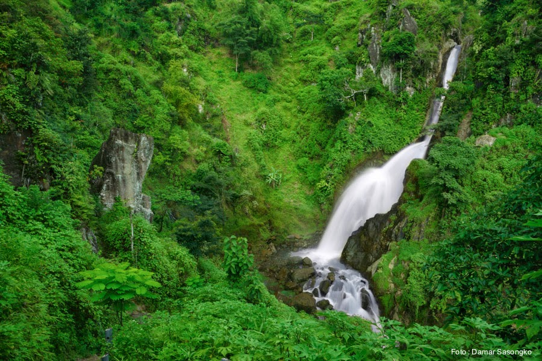

Sejarah

Menurut Babad Ponorogo, berdirinya Kabupaten Ponorogo dimulai setelah Raden Katong sampai di wilayah Wengker. Pada saat itu Wengker dipimpin oleh Surya Ngalam yang dikenal sebagai Ki Ageng Kutu. Raden Katong lalu memilih tempat yang memenuhi syarat untuk pemukiman (yaitu di Dusun Plampitan, Kelurahan Setono, Kecamatan Jenangan sekarang). Melalui situasi dan kondisi yang penuh dengan hambatan, tantangan, yang datang silih berganti, Raden Katong, Selo Aji, dan Ki Ageng Mirah beserta pengikutnya terus berupaya mendirikan pemukiman.
Tahun 1482–1486 M, untuk mencapai tujuan menegakkan perjuangan dengan menyusun kekuatan, sedikit demi sedikit kesulitan tersebut dapat teratasi, pendekatan kekeluargaan dengan Ki Ageng Kutu dan seluruh pendukungnya ketika itu mulai membuahkan hasil.
Dengan persiapan dalam rangka merintis kadipaten didukung semua pihak, Bathoro Katong (Raden Katong) dapat mendirikan Kadipaten Ponorogo pada akhir abad XV, dan ia menjadi adipati yang pertama.
Georgrafi
Kabupaten Ponorogo terletak di antara 111° 17’–111° 52’ BT dan 7° 49’–8° 20’ LS. Jarak ibu kota Ponorogo dengan ibu kota Provinsi Jawa Timur (Surabaya) kurang lebih 200 km ke arah timur laut dan ke ibu kota negara (Jakarta) kurang lebih 800 km ke arah barat.
Pariwisata
Beberapa objek wisata alam yang terdapat di Kabupaten Ponorogo yaitu:
Telaga Ngebel
Telaga Ngebel adalah sebuah danau alami yang terletak di Kecamatan Ngebel, Kabupaten Ponorogo. Kecamatan Ngebel terletak di lereng gunung Wilis. Telaga Ngebel terletak sekitar 30 km dari pusat kota Ponorogo dengan ketinggian 734 meter di atas permukaan laut. Keliling dari Telaga Ngebel sekitar 5 km dan suhu di telaga ini berkisar antara 20–26 ℃.
Taman Wisata Ngembag
Taman Wisata Ngembag adalah taman wisata yang terletak di Kelurahan Ronowijayan Kecamatan Siman sekitar 3 km di sebelah timur dari pusat kota Ponorogo. Taman ini terdiri dari sumber air yang dilengkapi dengan taman bermain dan kolam renang anak. Sebelumnya Ngembag dikenal sebagai mata air yang tak terawat. Kemudian oleh Pemkab Ponorogo diubah sebagai taman kota yang dilengkapi dengan kolam renang anak dan juga beberapa permainan anak-anak.
Air Terjun Pletuk

Air Terjun Pletuk atau juga dikenal dengan nama Coban Temu adalah air terjun yang terletak di Dusun Kranggan, Desa Jurug, Kecamatan Sooko, sebelah tenggara dari pusat kota Ponorogo atau lebih tepatnya sebelah selatan dari Kecamatan Pulung. Air terjun ini memiliki ketinggian sekitar 30 meter dan berada di atas ketinggian 450 meter di atas laut. Kawasan ini dikelilingi oleh perbukitan yang menjulang tinggi dan ditumbuhi sejumlah tanaman.